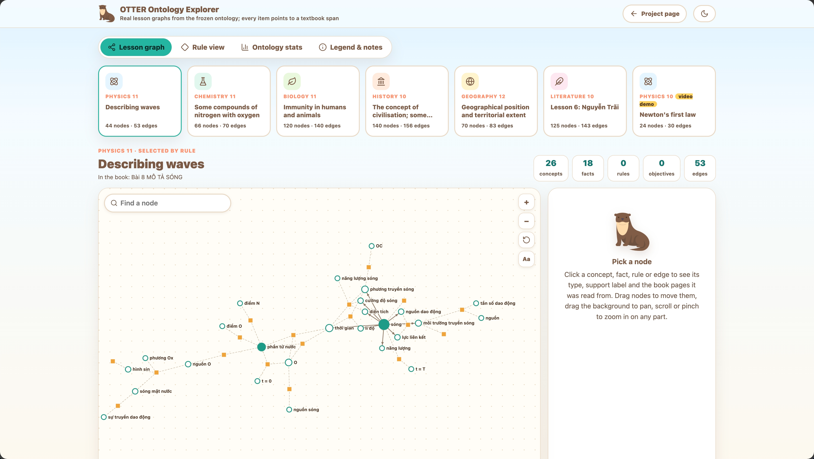

Research code & benchmark
Verifiable Multihop Reasoning over Educational Ontology for Vietnamese Education
Every answer comes with a source pointer (book, lesson, page) that a teacher can open, or with an honest “the book does not say”.
A 68-second tour: textbook pages become source spans, one real lesson becomes a graph of concepts and facts, and a real question is answered step by step with its source pointers. Captions only, no sound.
Everything shown is checked against the run files (25 checks in otter_demo_verification.json). It is one example, not an accuracy result.
Scanned textbook pages are transcribed and cut into paragraph-level source spans. A span-grounded Educational Ontology links every concept, fact and rule to the spans that state it.
OTTER follows ontology rules whose prerequisites are all met, finds the shortest valid derivation, and uses its sources to guide retrieval. Each option is then judged and every quote verified.
The answer carries a source pointer a teacher can open. If the book does not support an answer, OTTER can say so: “Không đủ căn cứ trong sách” (“not enough evidence in the book”).
Source spans are the evidence of record. The ontology is only a navigation index: its hints may be wrong, so they are never cited and never counted as proof.
Built automatically from 18 textbooks, then checked item by item against its sources. It has four layers that share one provenance table, so every item can be traced back to a span in the book. The explorer below shows real lessons of it, node by node.
Typed concepts (18 types: Law, Process, Quantity, Event, Person…) joined by 20 relation types such as is_a, causes, defined_as.
Premises, guards, conclusions and exceptions over concepts; formulas keep their variable bindings, e.g. x = A·cos(ωt + φ).
Learning objectives of each lesson, tied to the concepts and rules it covers by links such as teaches and assesses.
Every item points to the spans it was read from. A span is one paragraph, list, formula or heading, located by book and printed page.
Seven lesson graphs, one per subject, with the executable rules and the numbers behind the ontology. Click any node to see the book page it was read from.

Automatic labels from the support classifier, not human verification.
1,371 items dropped by the validator, each logged with its reason.
3,015 questions with gold source spans, in four subcategories. Scores are never averaged across subcategories.
1–3 passages, one subject or several
3–5 passages, many lessons
answerable or “the book does not say”
paraphrases, traps, true/false, fill-in
The questions were written from the textbooks with LLM help and automatic checks, and teachers are reviewing them now: no item should be called teacher-validated yet. The textbooks and their text are not included; questions carry pointers (book, lesson, page) instead.
ViEduHop on Hugging Face CC BY-NC-SA 4.0
Same backbone (Qwen3-32B-FP8) and embedder (bge-m3) for every system.
Plain hybrid RAG beats OTTER on accuracy with correct provenance (paired difference −8.9 points, 95% interval −11.4 to −6.4). We report it as it is.
Against GraphRAG, LightRAG, MiniRAG, HippoRAG 2 and the tool agents, OTTER has the best verified-correct rate at about 3.6k tokens per question.
On questions that need 3–5 passages every system scores below chance (13–22%), although a reader that is handed all the gold passages gets 173 of 175 right. Gathering evidence is the bottleneck.
Full tables, confidence intervals, the abstention study and all caveats are in the paper (under review).
No textbooks needed. Load the dataset, write one prediction per question, score it:
pip install datasets
# predictions.jsonl: {"id": ..., "prediction": "A", "source_span_ids": [...]}
# evaluate.py ships with the dataset on Hugging Face
python scripts/evaluate.py --data data/all.jsonl --pred predictions.jsonl
You need legal copies of the textbooks; the builder makes the spans and the ontology.
git clone https://github.com/quin210/OTTER.git cd OTTER && pip install -r requirements.txt bash scripts/serve/qwen3_32b.sh # local vLLM python -m otter.builder build --help # "otter_v2" is the name of OTTER in the code python scripts/eval/run.py --system otter_v2 --backbone main --bench <benchmark.jsonl>